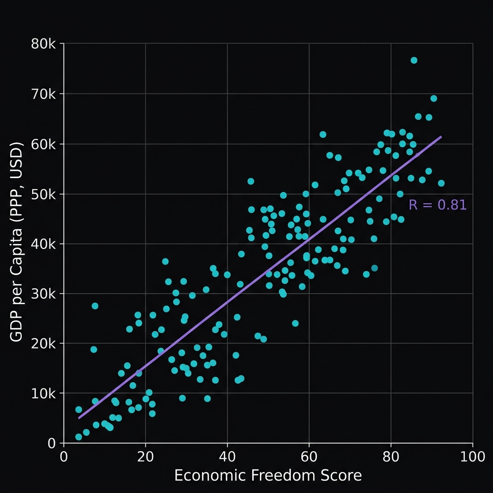
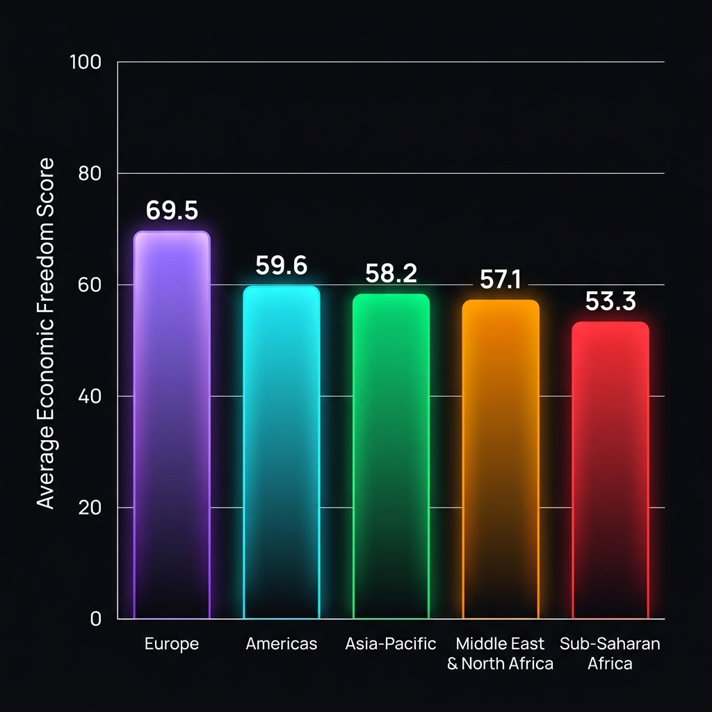
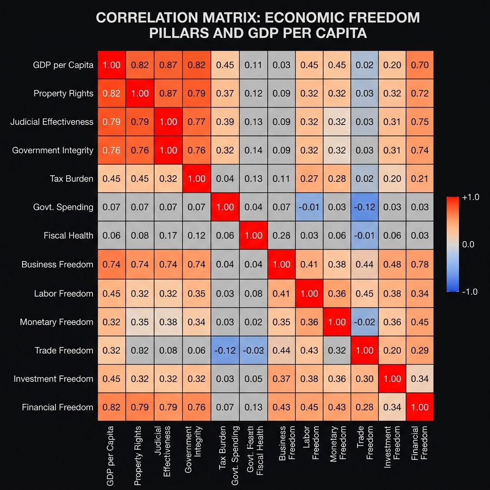

Measuring the Pulse of Prosperity
An index of economic freedom analysis exploring the empirical correlation between institutional quality—Rule of Law, Government Size, Regulatory Efficiency, and Open Markets—and widespread prosperity.
177
Countries Scored
12
Freedom Sub-pillars
0.82
Rule of Law/GDP Corr.
Tableau
Visualized Models
The Four Pillars of Economic Freedom
Economic freedom is grouped into four broad categories, comprising 12 quantitative and qualitative sub-pillars.
Rule of Law
Defines the legal infrastructure protecting individuals and investments. The strongest correlate with high GDP per Capita.
- Property Rights
- Judicial Effectiveness
- Government Integrity
Government Size
Measures tax rates and governmental expenditures. Generally displays weak or slightly negative correlation with GDP due to high-income state budgets.
- Tax Burden
- Govt Spending
- Fiscal Health
Regulatory Efficiency
Evaluates the burden of governmental regulations on starting businesses, managing workers, and price stability.
- Business Freedom
- Labor Freedom
- Monetary Freedom
Open Markets
Evaluates how easily goods, investments, and financial services flow across international borders.
- Trade Freedom
- Investment Freedom
- Financial Freedom
Analysis Dashboard
Observe the visual findings and regional breakdowns generated from the Index of Economic Freedom dataset.
Economic Freedom vs. GDP per Capita
The scatter plot shows a strong positive correlation (R = 0.81) between a country's Overall Economic Freedom Score and its GDP per capita. Countries that score above 70 consistently demonstrate significantly higher standard of living and national prosperity.

Figure 1: Scatter plot showing Economic Freedom Score vs GDP per Capita with regression line.Regional Breakdown
Europe leads the global averages with a regional score of 69.5, driven by high Rule of Law scores and Open Markets. In contrast, Sub-Saharan Africa and South Asia exhibit lower averages, suggesting areas where structural reforms could spark growth.

Figure 2: Regional average scores. Europe ranks the highest.Pillar Influence Correlation
This correlation matrix evaluates the relative impact of each of the 12 individual freedoms. **Rule of Law** (Property Rights, Judicial Effectiveness, Government Integrity) represents the strongest drivers, while Government Size shows neutral correlation, indicating that state size alone does not dictate wealth if the Rule of Law is robust.
| Economic Freedom Pillar | Correlation (R) with GDP |
|---|---|
| Property Rights | +0.82 (Strongest) |
| Government Integrity | +0.81 (Critical) |
| Business Freedom | +0.68 (High) |
| Tax Burden | -0.15 (Slightly Negative) |

Figure 3: Heatmap illustrating correlation indices.🏆 Top 5 Free Nations
- 1 Singapore 84.4
- 2 Switzerland 84.2
- 3 Ireland 82.0
- 4 New Zealand 80.6
- 5 Luxembourg 80.6
⚠️ Bottom 5 Repressed Nations
- 177 North Korea 3.0
- 176 Venezuela 24.8
- 175 Cuba 29.5
- 174 Sudan 32.0
- 173 Zimbabwe 33.1
Prosperity Predictor Playground
Adjust the slider bars for each of the 4 pillars of economic freedom and predict the resulting Prosperity Index and GDP per Capita.
Predictive Analysis Result
Model: Multiple Linear RegressionModerately Free
Estimated GDP per Capita: $31,000
Expected Socio-Economic Outcomes
Tableau Story & Reports
Our research includes advanced spatial visualizations and historical stories rendered in Tableau.
Interactive Tableau Story
The Tableau dashboards explore temporal trends of global wealth indices, mapping economic freedom against global health, democratic strength, and innovation indexes. The story is preserved in the project files under the following formats:
- **Dashboard 1 (1).pdf**: Mapping and raw score breakdowns.
- **Story 1 (1).pdf**: Dynamic narrative and insights.